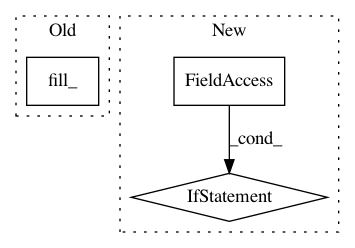

1c6d9d276f3a0c484226996ab7f9df4f90ce52f4,dcgan/main.py,,,#,179
Before Change
noise.data.resize_(batch_size, nz, 1, 1)
noise.data.normal_(0, 1)
fake = netG(noise)
label.data.fill_(fake_label)
output = netD(fake.detach())
errD_fake = criterion(output, label)
errD_fake.backward()
D_G_z1 = output.data.mean()
After Change
netD.zero_grad()
real_cpu, _ = data
batch_size = real_cpu.size(0)
if opt.cuda:
real_cpu = real_cpu.cuda()
input.resize_as_(real_cpu).copy_(real_cpu)
label.resize_(batch_size).fill_(real_label)
inputv = Variable(input)
labelv = Variable(label)
In pattern: SUPERPATTERN
Frequency: 3
Non-data size: 3
Instances
Project Name: pytorch/examples
Commit Name: 1c6d9d276f3a0c484226996ab7f9df4f90ce52f4
Time: 2017-06-05
Author: bartolsthoorn@gmail.com
File Name: dcgan/main.py
Class Name:
Method Name:
Project Name: junyanz/pytorch-CycleGAN-and-pix2pix
Commit Name: 9ba91fa13cbb1e7bc4069e46469b34abb5ca4869
Time: 2018-05-22
Author: tongzhou.wang.1994@gmail.com
File Name: models/networks.py
Class Name: GANLoss
Method Name: get_target_tensor